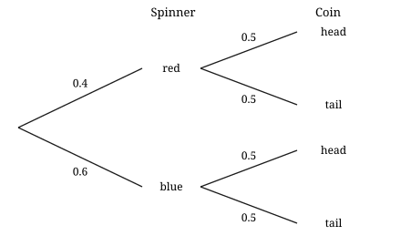

<script src="/assets/redirect.js"></script>
<section class="theory" data-section="IGCSE-24.1">
<h2>24.1 Using tree diagrams to show outcomes</h2>
<p class="src">Based on Cambridge IGCSE Mathematics Core and Extended Coursebook (Karen Morrison and Nick Hamshaw), Chapter 24 Probability using tree diagrams and Venn diagrams, printed p.832. Own wording and new numbers, following the coursebook use of a tree diagram to list all the outcomes of combined events.</p>
<p class="key-words"><strong>Key words:</strong> <em>tree diagram</em>, <em>outcome</em>, <em>combined events</em>, <em>independent events</em></p>
<h3>Combined events</h3>
<p>When two or more things happen one after another, such as spinning a spinner and then throwing a coin, we have <strong>combined events</strong>. A <strong>tree diagram</strong> shows every possible <strong>outcome</strong> in an organised way.</p>
<h3>Drawing a tree diagram</h3>
<ul><li>Draw one set of branches for the first event, one branch for each outcome.</li><li>From the end of each branch, draw a set of branches for the second event.</li><li>Write each outcome at the end of its branch and its probability on the branch.</li><li>The probabilities on the branches from one point always add up to 1.</li></ul>
<p>Each path from the start to an end point is one combined outcome. If the first event has \(m\) outcomes and the second has \(k\), there are \(m\times k\) end points.</p>
<p>Events are <strong>independent events</strong> if the outcome of one does not change the probabilities of the other. Then the second set of branches is the same on every part of the tree.</p>
<div class="worked-example">
<h4>Worked example 1: A spinner and a coin</h4>
<p class="src">Coursebook, 24.1, a tree diagram for two events. New numbers.</p>
<p></p><p>A biased spinner shows red with probability 0.4, otherwise blue. A fair coin is then thrown. Complete the tree diagram and list the outcomes.</p>
<ol class="steps">
<li>Blue branch: \(1-0.4=0.6\) <span class="mark">B1</span></li>
<li>Coin branches: head 0.5 and tail 0.5 after each colour <span class="mark">B1</span></li>
<li>Outcomes: (red, head), (red, tail), (blue, head), (blue, tail) <span class="mark">B1</span></li>
</ol>
<p class="final"><strong>Answer:</strong> 4 outcomes, as shown on the tree</p>
</div>
<div class="worked-example">
<h4>Worked example 2: Counting outcomes</h4>
<p class="src">Coursebook, 24.1, counting the end points of a tree. New numbers.</p>
<p>A fair dice is rolled and then a coin is thrown. How many outcomes does the tree diagram show?</p>
<ol class="steps">
<li>6 branches for the dice, each followed by 2 for the coin <span class="mark">M1</span></li>
<li>\(6\times2=12\) <span class="mark">A1</span></li>
</ol>
<p class="final"><strong>Answer:</strong> \(12\)</p>
</div>
<h3>Common mistakes</h3>
<ul><li>Branch probabilities from one point that do not add up to 1.</li><li>Drawing the second set of branches only once instead of from the end of every first branch.</li><li>Adding the numbers of branches instead of multiplying to count the outcomes.</li></ul>
<h3>Past paper</h3>
<p>There is no whole past-paper question on this subsection alone. Completing a tree diagram is part (a) of 0580/41/O/N/16 Q7, which is in 24.2.</p>
<div class="quick-check">
<h4>Quick check 1</h4>
<p>On a tree diagram, the branches for a train being late or not late at a station have probabilities 0.3 (late) and \(x\) (not late). Find \(x\).</p>
<details><summary>Worked solution</summary>
<ol class="steps"><li>\(0.3+x=1\)</li></ol>
<p class="final"><strong>Answer:</strong> \(0.7\)</p>
</details>
</div>
<div class="quick-check">
<h4>Quick check 2</h4>
<p>A spinner with 2 equal sections is spun and then a fair 6-sided dice is rolled. How many outcomes are there at the end of the tree diagram?</p>
<details><summary>Worked solution</summary>
<ol class="steps"><li>\(2\times6\)</li></ol>
<p class="final"><strong>Answer:</strong> \(12\)</p>
</details>
</div>
<div class="quick-check">
<h4>Quick check 3</h4>
<p>Three coins are thrown one after another. How many outcomes are shown at the end of a full tree diagram?</p>
<details><summary>Worked solution</summary>
<ol class="steps"><li>\(2\times2\times2\)</li></ol>
<p class="final"><strong>Answer:</strong> \(8\)</p>
</details>
</div>
</section>
